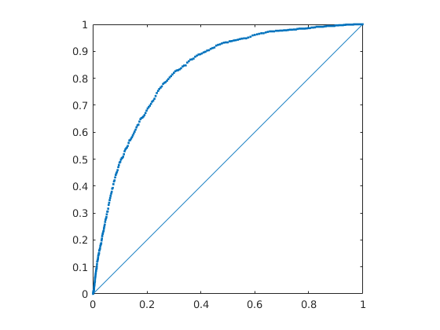
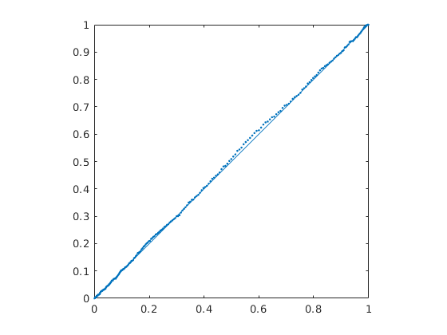

(method of orientation)
quantile-quantile of misorientation angle against random angular misorientation
cs = crystalSymmetry('-43m'); odf1 = unimodalODF(orientation.id(cs),'halfwidth',20*degree); odf2 = unimodalODF(orientation.id(cs),'halfwidth',50*degree);
qqplot(odf1.calcOrientations(1000)) qqplot(odf2.calcOrientations(1000)) 
| DocHelp 0.1 beta |